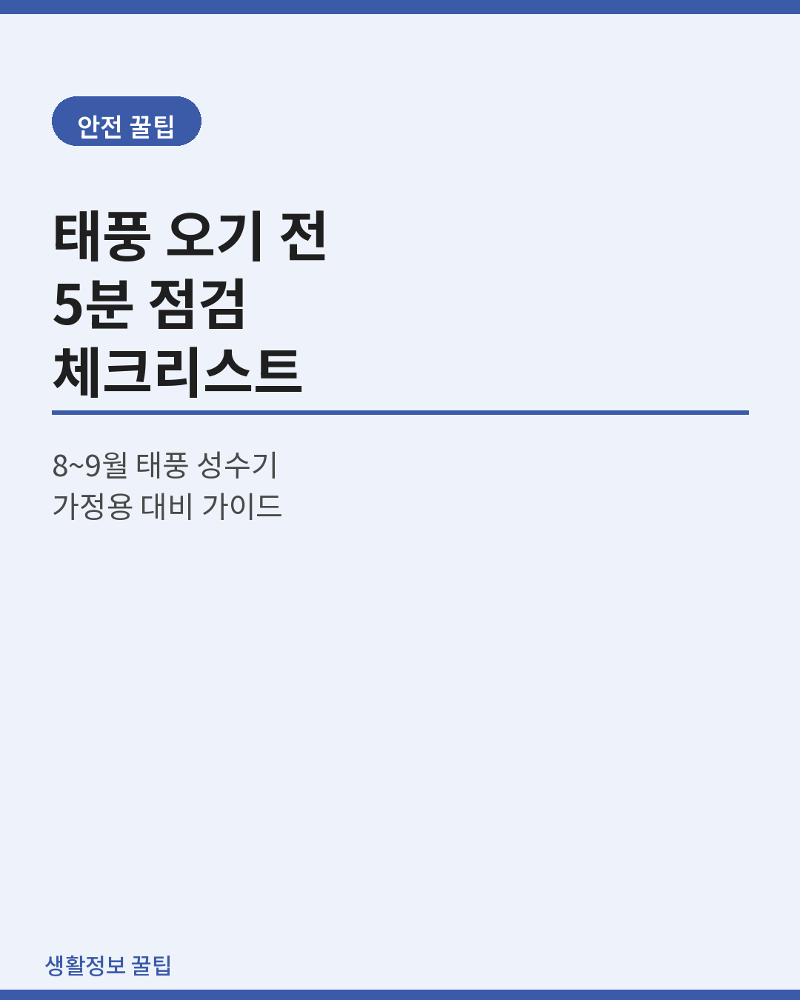
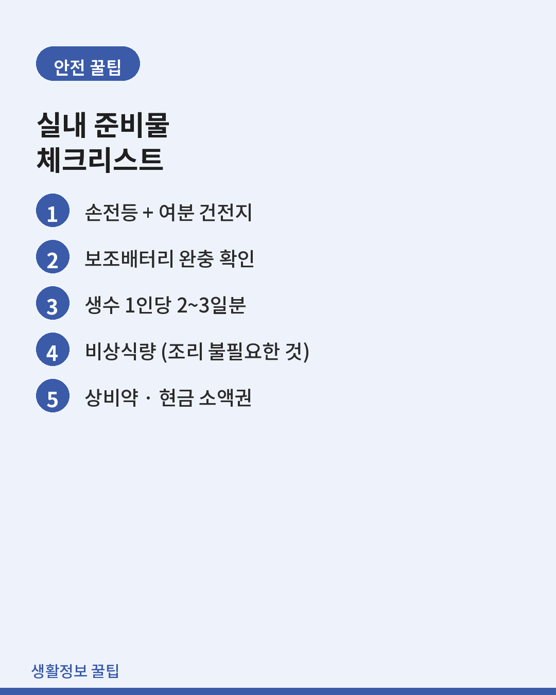
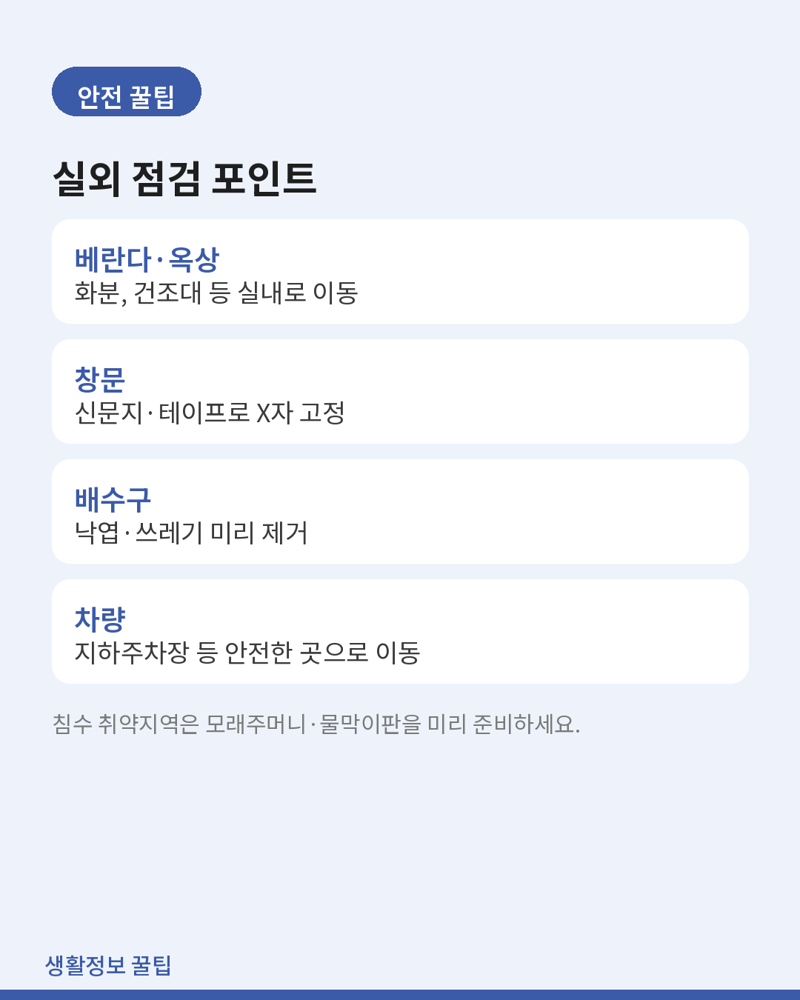
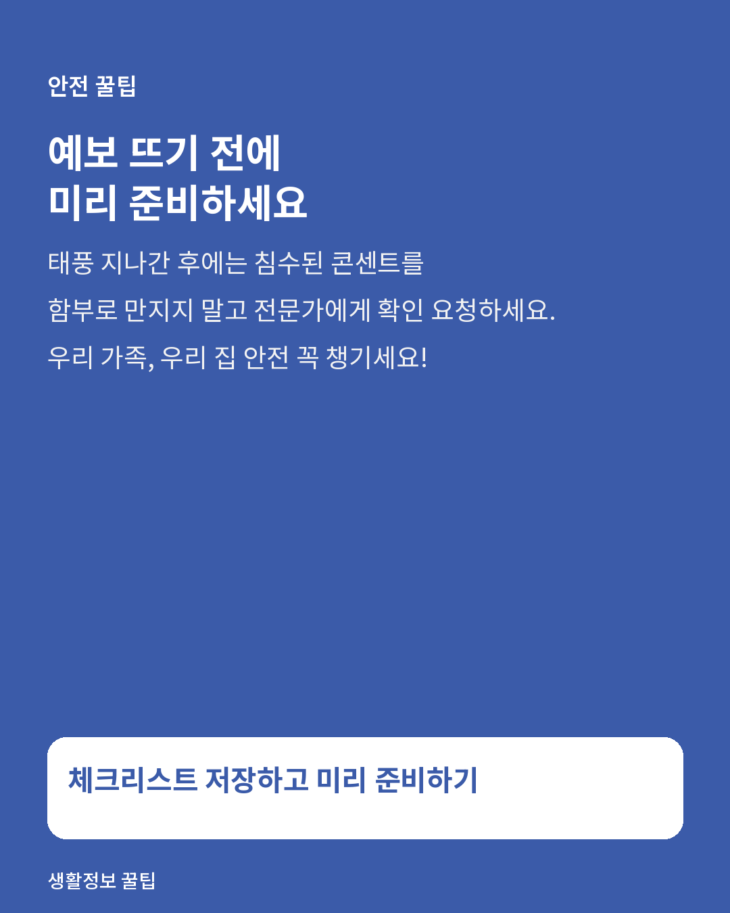

안전
태풍 오기 전 5분 점검 — 가정용 태풍 대비 체크리스트
특보가 뜨고 나면 준비 시간이 넉넉하지 않습니다. 미리 훑어둘 목록.

기상청 통계를 보면 우리나라에 영향을 주는 태풍의 절반 이상이 8~9월에 집중됩니다. 뉴스에 예상 경로가 뜨기 시작하면 그때부터는 준비 시간이 넉넉하지 않으니, 미리 체크리스트를 만들어두는 게 가장 확실한 대비법입니다.
1. 실외 점검
- 베란다·옥상의 화분, 빨래건조대, 자전거 등 날아갈 수 있는 물건은 실내로 옮깁니다.
- 창문틀 사이는 신문지나 문풍지로 빗물 유입을 막고, 창문은 테이프로 가로·세로 고정합니다.
- 배수구·하수구의 낙엽과 쓰레기를 미리 제거해 역류를 막습니다.
- 차량은 지하주차장이나 침수 우려가 없는 고지대로 미리 옮깁니다.

2. 실내 준비물
- 손전등과 여분 건전지
- 보조배터리 — 완충 상태 확인
- 생수 1인당 2~3일분
- 비상식량 — 즉석밥, 통조림 등 조리가 필요 없는 것 위주
- 상비약, 반창고 등 구급용품
- 현금 소액권 — 정전 시 카드결제 불가 대비
- 라디오 또는 스마트폰 재난문자 알림 설정 확인
3. 정전 대비
- 정전되면 냉장고 문 여닫는 횟수를 최소화해 내부 온도 유지 시간을 늘립니다.
- 휴대용 랜턴 위치를 가족 모두가 알고 있어야 합니다.
- 엘리베이터 이용 중 정전에 대비해, 고층 거주자는 태풍 예보 시 외출을 줄이세요.
4. 침수 취약 지역이라면
- 지하주차장·반지하 거주 시 모래주머니나 물막이판을 미리 배치합니다.
- 아파트 관리사무소 비상연락망을 확인해둡니다.
- 국민재난안전포털과 지자체 안전 문자 수신 설정을 켜두세요.

5. 태풍이 지나간 후
- 침수 흔적이 있는 콘센트·전기시설은 감전 위험이 있으니 만지지 말고 관리사무소나 전문가에게 확인을 요청하세요.
- 강풍에 흔들린 간판, 나무 등 2차 사고 위험 지역은 우회합니다.
- 보험에 가입한 시설물 피해는 사진을 찍어두고 보험사에 즉시 접수합니다.

마무리
태풍은 예보가 나온 순간부터 준비해도 늦지 않습니다. 다만 매번 허둥대지 않으려면 체크리스트를 한 번 정리해두고 매년 여름철 시작 전에 훑어보는 습관이 좋습니다.
함께 쓰면 좋은 것
이 글의 일부 링크는 쿠팡 파트너스 활동의 일환으로, 이를 통해 발생한 수익의 일정액을 제공받을 수 있습니다.
- 대용량 보조배터리정전 시 통신수단을 확보하려면 대용량 보조배터리는 사실상 필수입니다.